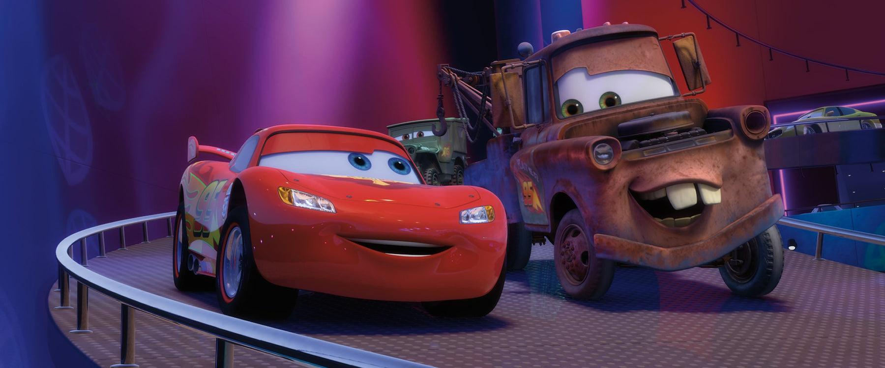
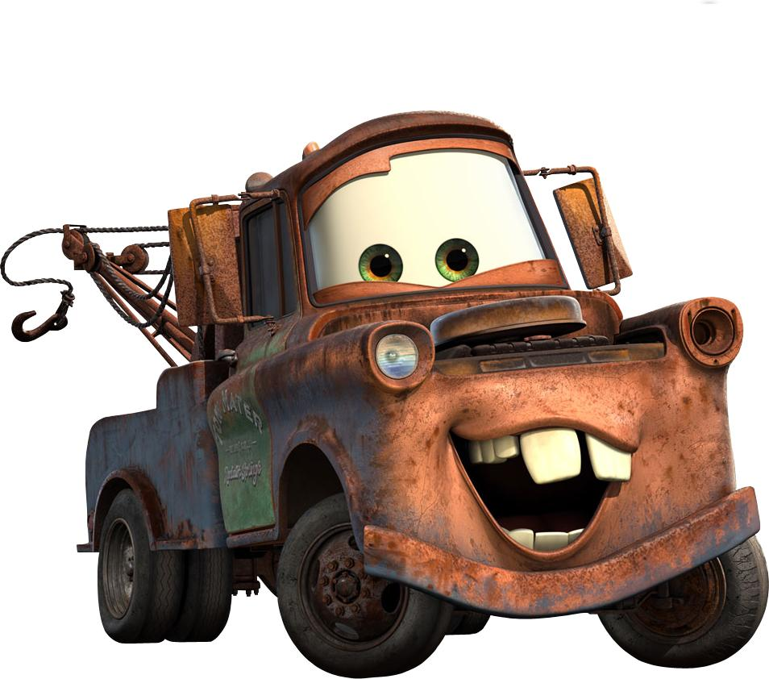
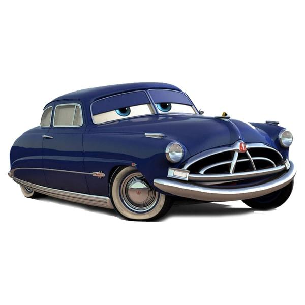

Cars (2006)
Rayo McQueen llega por accidente a Radiador Springs, donde conoce nuevos amigos y descubre el verdadero significado de la amistad.
Explorar Cars 1Velocidad, amistad y grandes aventuras sobre ruedas

¡Prepárate para acelerar! Bienvenido a Universo Cars, un espacio dedicado a una de las historias animadas más emocionantes de Disney y Pixar.
Aquí podrás conocer las aventuras de Rayo McQueen, un automóvil de carreras que descubre que la vida no solamente se trata de ganar, sino también de encontrar amigos, aprender de los demás y nunca rendirse ante los obstáculos.
Explora las películas, descubre a sus personajes, conoce sus historias y acompaña a tus corredores favoritos en cada aventura.
La historia de Cars está formada por tres películas principales que muestran la evolución de Rayo McQueen y de todos sus amigos.
Rayo McQueen llega por accidente a Radiador Springs, donde conoce nuevos amigos y descubre el verdadero significado de la amistad.
Explorar Cars 1
Rayo y Mate viajan por el mundo para participar en el Gran Prix Mundial. Una aventura llena de carreras, espionaje y sorpresas.
Explorar Cars 2
Rayo se enfrenta a una nueva generación de corredores y descubre que todavía tiene mucho que aprender y enseñar.
Explorar Cars 3
El mejor amigo de Rayo. Es divertido, leal y siempre está dispuesto a ayudar.

Una amiga especial de Rayo que disfruta la tranquilidad de Radiador Springs.

Un antiguo campeón que comparte su experiencia y conocimientos con Rayo.
Radiador Springs es el pequeño pueblo donde Rayo McQueen conoce a algunos de sus mejores amigos. Es un lugar inspirado en las carreteras y paisajes de la histórica Ruta 66 de Estados Unidos.
Sus habitantes le enseñan a Rayo que las personas que conocemos durante el camino pueden cambiar nuestra forma de ver el mundo.